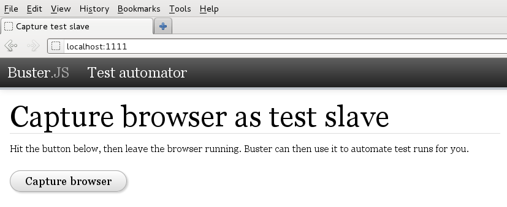

Enterprise JS
High-Performance Mobile Applications with Backbone.JS
Oleg Buss, Andreas Hölzl
Who we are
Canoo Engineering AG
- 50 people | 40 engineers
- Basel, Switzerland
- Delivering end-user happiness since 2000
- Full-stack Java, Mobile, Modern Web
- RIASuite, Findit, Engineering
Oleg
- cross-plattform 3D engine specialist
- HTML5 addictee
- Thinks "we will all live in the browser"
Andreas

- Lead Mobile Engineering
- Founder of Wikihood
- Initiator of dolphin.js
- Thinks "HTML5 and Android are the future"
What we do
CanooNet Offline
native iOS, encryption, spelling correction

DSwiss SecureSafe
Sencha Touch / PhoneGap, high security, native Android L&F

Medical Insights
backbone.js / PhoneGap, custom UI, content udpate

Foxtrail
backbone.js / PhoneGap, hardware integration, cross-plattform

What to do
Mobile Web Frameworks
- JQuery Mobile
- Sencha Touch
- mGWT
- backbone.js
JQuery Mobile
- nice UI components
- odd page loading concept
- dialogs as a single page
- 144KB
Sencha Touch
- cross-plattform UI components
- full mobile framework
- configuration over programming
- heavy DOM
- customization difficult
- 500KB
mGWT
- cross-plattform, multi-channel
- few UI components
- plattform optimized code
- slow iteration cycles, complex
backbone.js
- lightweight
- flexible
- just MVC, no components
Performance Considerations
- shallow DOM
- CSS3 where possible
- small resource footprint
- modularization, testable code
- fast iteration cycles
- continuous integration
Agenda
- Modularization
- Build automatization
- External libraries
- Testing
- Backbone.js MVC - I
lunch break
- Backbone.js MVC - II
- event bus, deferreds
- native apps
- dolphin.js
Modularization
Module Pattern, AMD, Require.js
Object Literal
var myObjectLiteral = {
variableKey: variableValue,
functionKey: function () {
// ...
};
};
Module Pattern
var testModule = (function () {
var counter = 0;
return {
incrementCounter: function () {
return counter++;
},
resetCounter: function () {
console.log( "counter value prior to reset: " + counter );
counter = 0;
}
};
})();
// Usage:
// Increment our counter
testModule.incrementCounter();
// Check the counter value and reset
// Outputs: 1
testModule.resetCounter();
Module Pattern - Mixins
// Global module
var myModule = (function ( jQ, _ ) {
function privateMethod1(){
jQ(".container").html("test");
}
function privateMethod2(){
console.log( _.min([10, 5, 100, 2, 1000]) );
}
return{
publicMethod: function(){
privateMethod1();
}
};
// Pull in jQuery and Underscore
}( jQuery, _ ));
myModule.publicMethod();
Script loading
synchronous
<head>
</head>
asynchronous
var script = document.createElement('script');
var firstScript = document.getElementsByTagName('script')[0];
script.src = "http://example.com/myscript.min.js";
firstScript.parentNode.insertBefore( script, firstScript );
require()
require( [ window.JSON ? undefined : 'util/json2' ], function ( JSON ) {
JSON = JSON || window.JSON;
console.log( JSON.parse( '{ "JSON" : "HERE" }' ) );
});
AMD - Asynchronous Module Definition
module definition
define(
module_id /*optional*/,
[dependencies] /*optional*/,
definition function /*function for instantiating the module or object*/
);
module example
define(
"myModule",
["math", "graph"],
function ( math, graph ) {
return {
plot: function( x, y ){
return graph.drawPie( math.randomGrid( x, y ) );
}
};
}
);
Dynamically loaded dependencies
define(function ( require ) {
var isReady = false, foobar;
require(["foo", "bar"], function ( foo, bar ) {
isReady = true;
foobar = foo() + bar();
});
return {
isReady: isReady,
foobar: foobar
};
});
Require.JS
require(["app/myModule"],
function( myModule ){
// start the main module which in-turn
// loads other modules
var module = new myModule();
module.doStuff();
});
References
Exercise 1 - Require.js
Refactor the list editing application into separate AMD modules.
Integrating external libraries
bower
Testing
with buster.js
Setup
Buster.JS on the command-line requires Node.js 0.6.3 or newer and npm.
Installation
npm install -g buster
npm install -g buster-amd
Configuration
test/buster.js
var config = module.exports;
config["Browser tests"] = {
environment: "browser",
libs: ["lib/**/*.js"],
sources: ["src/core.js", "src/**/*.js"],
tests: ["test/**/*.js"]
};
Setup (cont.)
Test server
% buster server
Test client registration
Test execution
% buster test
Writing tests
Script loading
synchronous
<head>
</head>
asynchronous
var script = document.createElement('script');
var firstScript = document.getElementsByTagName('script')[0];
script.src = "http://example.com/myscript.min.js";
firstScript.parentNode.insertBefore( script, firstScript );
require()
require( [ window.JSON ? undefined : 'util/json2' ], function ( JSON ) {
JSON = JSON || window.JSON;
console.log( JSON.parse( '{ "JSON" : "HERE" }' ) );
});
AMD - Asynchronous Module Definition
module definition
define(
module_id /*optional*/,
[dependencies] /*optional*/,
definition function /*function for instantiating the module or object*/
);
module example
define(
"myModule",
["math", "graph"],
function ( math, graph ) {
return {
plot: function( x, y ){
return graph.drawPie( math.randomGrid( x, y ) );
}
};
}
);
Dynamically loaded dependencies
define(function ( require ) {
var isReady = false, foobar;
require(["foo", "bar"], function ( foo, bar ) {
isReady = true;
foobar = foo() + bar();
});
return {
isReady: isReady,
foobar: foobar
};
});
Require.JS
require(["app/myModule"],
function( myModule ){
// start the main module which in-turn
// loads other modules
var module = new myModule();
module.doStuff();
});
References
Exercise 2 - buster.js
Write a simple test for XYZ
Build automatization
grunt